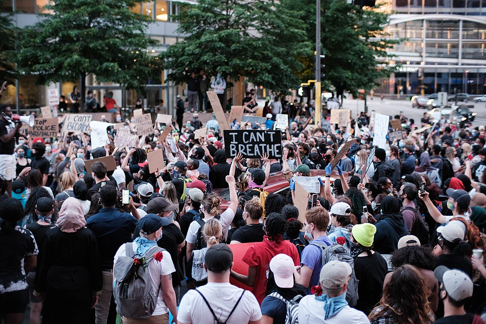

<!DOCTYPE html>
<html>
<head>
	<meta charset="utf-8">
	<title></title>
</head>
<body>

</body>
</html>

<h1>Five Largest Protests in US History</h1>



<p>
	The tradition of protests that demand progressive change in the United States continue.

	Here are the country's five of the top protests in terms of attendance:

</p>

<ol>
	
	<li> <a href="https://en.wikipedia.org/wiki/George_Floyd_protests">George Floyd<a> Protests nationwide with an estimated 26 million protestors</li> 
	<li> <a href="https://en.wikipedia.org/wiki/2017_Women%27s_March">Women's March<a> Women's march in 2017 drew 5.6 million people nationwide</li> 
	<li> <a href="https://en.wikipedia.org/wiki/March_for_Our_Lives">March for Our Lives<a> A student led protest against gun in 2018 drew about 2 million people</li>
	<li> <a href="https://en.wikipedia.org/wiki/2018_Women%27s_March">Womens March 2018<a> Women's march in 2018 drew about 1.5. million protestors</li> 
	<li> <a href="https://en.wikipedia.org/wiki/March_on_Washington_for_Lesbian,_Gay_and_Bi_Equal_Rights_and_Liberation">March on Washington for Lesbian Gay and Bi Equal Rights and Liberation<a> drew about 1 million people in 1993</li> 

</ol>


					<b>Copied from Wikipedia </b> 